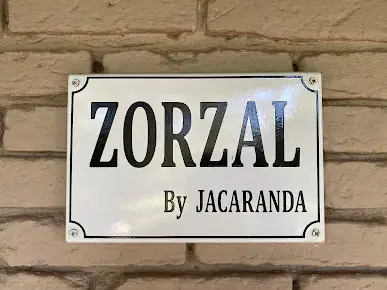
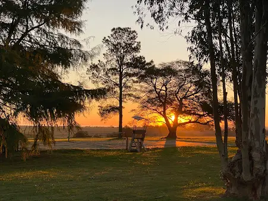
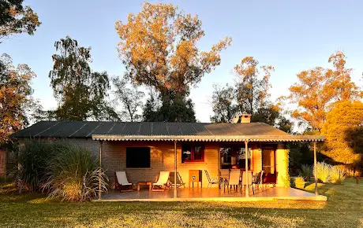
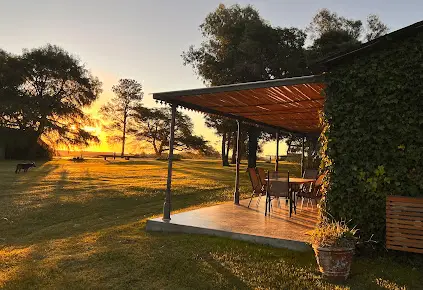

Casa de Campo Boutique
Manual de Marca — La guía del alma de Zorzal: cómo se ve, cómo suena y cómo se siente.
Donde el campo se encuentra con el río ↓
Manual de Marca — La guía del alma de Zorzal: cómo se ve, cómo suena y cómo se siente.
Zorzal es refugio, no hotel. Es el lugar entero para tu gente, rodeado de tres hectáreas de campo ondulado frente al Río de la Plata.
En la zona de San Pedro, a 15 km del Barrio Histórico de Colonia del Sacramento, Zorzal ocupa un antiguo puesto de la Estancia Parque Anchorena, reciclado con cuidado y decorado con objetos y telas traídos de viajes.
Dos galerías —una mirando al atardecer y el río, otra con parrillero cubierto—, una pileta enorme y divina, quincho, paddle, ping pong y caminatas hasta la playa. Todo en exclusiva: nada se comparte.
Nuestra marca traduce esa experiencia: cálida, auténtica, serena y generosa.
“Todo el lugar para tu grupo: campo, río y atardeceres, sin compartir con nadie.”
Promesa de marca · Exclusividad serena en plena naturaleza.
Un pájaro y una palabra. El zorzal —ave típica del campo rioplatense, de pecho rufo— se posa sobre un wordmark serif sobrio y elegante.
Versión principal
El isotipo del zorzal —posado sobre la palabra— aporta calidez y arraigo; el wordmark en serif de alto contraste aporta el aire boutique. La bajada “Casa de Campo Boutique” en sans mayúscula espaciada equilibra lo clásico con lo contemporáneo.
Para espacios reducidos:
logo + bajada al costado.
El pájaro puede recortarse y usarse solo como sello, ícono de perfil o marca de agua cuando el espacio es muy reducido.
Sobre fondo claro se usa el logotipo completo a color. Sobre fondos de color u oscuros, el wordmark se aplica en una sola tinta (crema o pizarra) para garantizar contraste.

El cartel esmaltado original inspira el espíritu artesanal y la serif de alto contraste. El nuevo logotipo recupera ese carácter con una tipografía similar pero propia (Cormorant Garamond), suma el isotipo del zorzal y adopta la denominación de marca completa “Casa de Campo Boutique”.
Cuatro colores tomados del propio zorzal colorado, el ave que da nombre y alma a la marca: su pecho rufo, su lomo pardo, sus alas pizarra y su pico mostaza.
El crema —tono de la garganta del zorzal— actúa como lienzo cálido, y la tinta como texto. Aportan reposo y dejan respirar a los colores del plumaje.
Predominan el crema y los pardos; la pizarra estructura los textos; el rufo y la mostaza se reservan para acentos y llamados a la acción.
Crema · Pardo · Pizarra · Rufo · Mostaza



La paleta es el plumaje del zorzal hecho marca: pecho rufo, lomo pardo, alas pizarra y pico mostaza, sobre el crema de su garganta.
Una serif con alma de cartel antiguo y una sans limpia y contemporánea. Juntas: cálido y boutique.
Serif de alto contraste, elegante y de raíz clásica. Hereda el carácter del cartel esmaltado original. Para logotipo, títulos y frases destacadas.
Sans geométrica, neutra y muy legible. Para cuerpos de texto, bajadas, etiquetas, botones y datos. En mayúsculas espaciadas funciona como detalle boutique.
Uso ocasional para guiños cálidos y cercanos en redes y folletos. Nunca en bloques largos.
Hablamos como un anfitrión cálido que abre las puertas de su casa de campo: cercano, honesto y sin protocolo.
Recibimos como a la familia. Tuteo, amabilidad y cuidado real.
Sin pretensión. Lo decimos como es: campo, río y simpleza linda.
Invitamos a bajar un cambio. Tiempo, silencio y atardeceres.
Todo el lugar para tu grupo. Damos detalles y confianza.
| Atributo | Sí decimos | No decimos |
|---|---|---|
| Cercano | “Tenés todo el lugar para tu grupo.” | “El establecimiento dispone de instalaciones.” |
| Sensorial | “La pileta es divina, con vista al río y al atardecer.” | “Piscina de grandes dimensiones.” |
| Honesto | “No incluye leña. Estadía mínima de 2 noches.” | Omitir condiciones o exagerar. |
| Hospitalario | “Cualquier duda, consultá, no molesta.” | “Consulte nuestros términos y condiciones.” |
Palabras que nos representan y conviene repetir en las comunicaciones:
“Donde el campo se encuentra con el río, y el día se despide en colores.”
Cómo se ve la identidad aplicada en redes sociales, web y material impreso.
A 10 minutos del Barrio Histórico de Colonia, frente al Río de la Plata.
Los tres ejemplos comparten la misma lógica: foto cálida del lugar, serif para el corazón del mensaje, sans para los datos y el rufo del pecho reservado para el llamado a la acción.